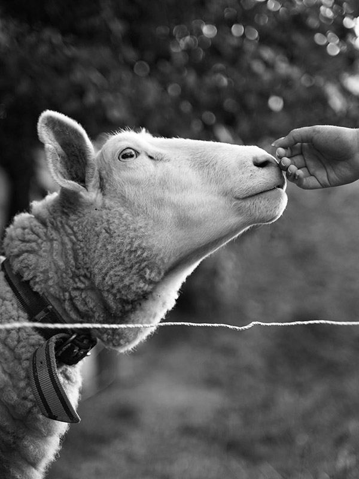
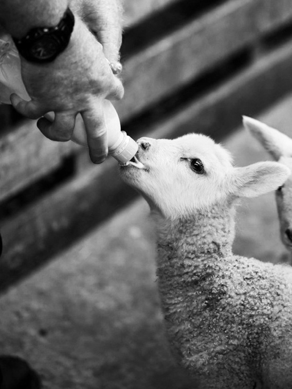
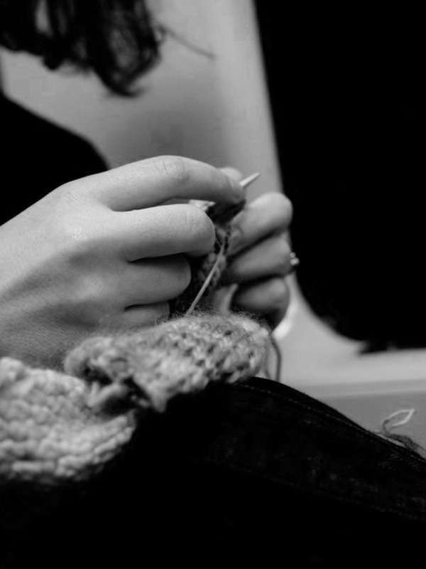

Sobre Nosotros

Respetamos la naturaleza
En Tejedora rural, trabajamos cuidando el entorno, valorando los recursos naturales. Siempre defendiendo el bienestar animal, utilizando únicamente materias primas extraidas de manera responsable y respetuosa.
Cuidamos a los animales
Obtenemos nuestras materias primas de pequeñas ganaderías próximas a nuestra localización, preocupándonos de que todos nuestros proveedores se impliquen en el bienestar de sus animales.


Valoramos la artesania
Consideramos el tejer nuesrto oficio, algo que nos apasiona, y por ello le dedicamos todo el amor y el detalle que se merece realizando las prendas a mano, prescindiendo de la mecanización de los procesos. De este mundo conseguimos un producto unico y muy auténtico.